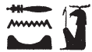

Column 9 (270-281)
Esna 270
- Location: Column 5
- Date: Domitian
-
Hieroglyphic Text
- Bibliography: None
Aʿnḫ nṯr nfr
ỉwʿʿ n tȝ-ṯnn
nḥp tȝ.wy
rwḏ-ʿ.wy
mnḫ kȝ.wt
nb nfrw
(tmdyns nty-ḫwỉ)|
mry ẖnmw-Rʿ nb tȝ-sn.t
A Live the good god,
heir of Tatenen,
potter of the two lands,
firm of arms,
effective of works,
Lord of Goodness:
(Domitian Augustus)|
beloved of Khnum-Re Lord of Esna.
Bʿnḫ nṯr nfr
nsw.t šmʿ
bỉty mḥw
snfr Bȝq.t
sȝḫ gs.w-pr.w
pḏ.t-9 ẖr ṯb.ty=f
nb-tȝ.wy
(ỉwtgrtr ksrs)|
mry ẖnmw-Rʿ nb sḫ.t
B Live the good god,
King of Upper Egypt,
King of Lower Egypt,
who improves Egypt,
who makes the temples great,
the Nine Bows are under his feet,
Lord of the Two Lands:
(Autokrator Caesar)|
beloved of Khnum-Re Lord of the Field.
Esna 271
- Location: Column 5
- Date: Domitian
-
Hieroglyphic Text
- Bibliography: None
Cartouches of Heka, before Khnum. Conventional spellings.
Heka’s name is spelled:
2, 6; 4, 8;
Esna 272
- Location: Column 9
- Date: Domitian
- Hieroglyphic Text
- Bibliography: Sauneron 1962, pp. 142-144; see also Tempeltexte 2.0
1ḥnk sšn n š
ḏd-mdw
ẖnmw-Rʿ nb tȝ-sn.t
mn n=k nḫb ʿnḫ
prỉ m š ʿȝ n Ḫmnw
ỉr n mw Ḫmny.w
m qȝy qȝ
m šȝʿ ḫp(r)
ỉnm=f m nbw
gȝb.wt=f m ḫsbḏ n mȝʿ.t
ʿr šps n mw.t=f 2ỉh.t
wbn=f m ḥwnw=f
šps ḥʿw=f m Nfr-tm
wn=f ỉr.t=f
ḫrs.n=f kkw
sḫpr.n=f wnn.t nb
m tȝ pn
Ḫmny.w m ỉȝw n ḥr=f nfr
šȝʿ.n=f kȝ.t
m zp tpy
rmy=f ḫpr rmṯ.w
twt=s(n) n=f m mšʿ
3zbṯ=f ḫp(r) nṯr.w
ẖmn.n=f psḏ.t dmḏ
1 Offering the lotus of the lake.
Words spoken:
O Khnum-Re,224 Lord of Esna,
receive the living lotus blossom,
which comes from the Great Lake in Hermopolis,
made with the seed of the Ogdoad
in the high mound,
at the beginning of existence.
Its color is gold,
and its petals are true lapis lazuli.
The august bud of his mother, 2 the Ihet cow,
he rose during his rejuvenation,
and his body is august as Nefertem.
As he opens his eye,
he dispelled the darkness,
and created all that exists
in this earth.
The Ogdoad are in praise of his good face.
He began works
in the initial moment:
as he cried (rmy), so came about people (rmṯ)
they belong to him as an army.
3 As he laughed, so came about gods,225
he modeled the complete Ennead.
ḫtỉ(?) n=f tȝ-ṯnn mnẖ
(ḥr) nḫb n=f nswy.t=f
(ḥt) ṯnỉ rn=f ẖnm.n=f
ḥtp=f (ḥr) s.t=f
ḫns=f r ỉw-ds.wy
ỉw stwt=f ỉm r sḫ.t-ẖnmw
ỉw=f m bȝ n ȝḫ šps
m ḥr n sr
qs.w=f m ḥḏ
ỉwf=f 4m nbw
ḥry-tp=f m ḫsbḏ n mȝʿ.t
ẖnmw-Rʿ nb tȝ-sn.t
wbn=k m ȝḫ.t
ḏȝỉ=k p.t m ḥtp
wbn=k m wỉȝ n ḥḥ
dỉ.n=k wnn.t nb
pr m ỉr.t=k
ḥrr.w nb
pr m ȝḫ.ty=k
ẖnmw-Rʿ nb tȝ-sn.t
mn n=k ỉr.t Ḥr
ḫnm nty Nfr-tm
5zȝ mnḫ n Ḫmny.w
ỉwʿʿ ʿnḫ pr m Nwn
wtṯ n ṯȝy 4
ms n ỉd.wt 4
ȝḫty šps
pr m N.t
sḫm nfr ḫnty sḫ.t
pr m š n ỉdḥ.w
m ʿr
pr ỉm=f ḥr s.t
n.t mw.t=f ỉh.t
Tatenen inscribes(?) a cartouche for him,
assigning him his kingship,
distinguishing his name which he fashioned,
so he might rest (upon) his throne.
Then he goes to the Lake of Knives
(that place resembles the Field of Khnum),
he has the visible form of the August Ba,
with a ram head,
his bones are silver,
his flesh 4 is gold,
and his hair is true lapis lazuli.
Khnum-Re Lord of Esna:
may you rise in the Akhet,
and travel the sky in peace.
You shine in the bark of millions,
having given all that exists,
which came from your eye(s);
all flowers
which came from your luminous eyes.
Khnum-Re Lord of Esna:
receive the Eye of Horus,
the scent of Nefertem,226
5 beneficent child of the Ogdoad,
living heir who emerged from Nun,
begotten by the Four Males,
and born of the Four Females.
August one of the horizon,
who came forth from Neith,
good power, foremost of the Field,
who emerged from the lake of reeds
as a bud,
from which he emerged upon the throne
of his mother, the Ihet cow.
ẖnmw-Rʿ nb tȝ-sn.t
mn n=k ỉr.t Ḫr
ỉn n=k ỉt=k Nwn
6sšn šps
nḏm sṯỉ
fd.t nṯr
pr m Qbḥw
ḥnk st n=k Ḏḥwty m Mȝʿ.t
sȝḫ=f tw
m dwȝ.w štȝ.w
nḏm=f fnḏ=f
m ẖr.t-hrw nt rʿ-nb
nfr ỉb=k
ẖnmw-Rʿ nb tȝ-sn.t
smȝʿ-ḫrw=k r ḫfty.[w=k]
Khnum-Re Lord of Esna:
receive the Eye of Horus,
which your father Nun brings to you,
6 the august lotus blossom,
sweet of smell,
the divine efflux,
which came forth from Qebehu.227
Thoth offers them to you as Maat,
and he transfigures you
with mysterious hymns;228
he sweetens your nose,
in the course of every day.
May your heart be glad,
Khnum-Re Lord of Esna.
your are justified over [your] enem[ies].
Esna 273
- Location: Column 9
- Date: Domitian
- Hieroglyphic Text
- Bibliography: Sauneron 1962, p. 146.
6r’ n ḥnk sšn nḥm(.t)
ḏd-mdw
ẖnmw-Rʿ nb tȝ-sn.t
7mn n=k sḫ.t
ỉr.tw n=k sḫ.t
ḫsbḏ n mȝʿ.t
ḥrr(.t) nb twt(.w)
n ḥr=k
mȝȝ=k ḥr.w ḫʿỉ=k
m wỉȝ n ḥḥ(.w)
ẖnmw-Rʿ nb tȝ-sn.t
mn n=k ỉr.t-Ḥr
ḫnmw nty Nfr-tm
r fnḏ=k
6 Formula for offering two lotuses.
Words spoken:
Khnum-Re Lord of Esna:
7 receive the field,229
one makes the field for you
(appear as) true lapis-lazuli;230
all flowers are assembled
for your face.
You see (every)body when you appear
in the Bark of Millions.231
Khnum-Re Lord of Esna:
receive the Eye of Horus,
the scent of Nefertem232
is at your nose.
Esna 274
- Location: Column 9
- Date: Domitian
- Hieroglyphic Text
- Bibliography: Sauneron 1962, pp. 146-148.
7r’ n ḥnk sšn ḥḏ
ḏd-mdw
ỉnḏ-ḥr=k
nḫb šps
prỉ m tȝ
ỉr ḫprw=f [m] ḥʿw-nṯr
fd.t nṯry
prỉ m Nwn
8ḥnk=f s(w)
n ẖnmw-Rʿ nb tȝ-sn.t
ḥnʿ psḏ.t=f
ẖnmw-Rʿ nb tȝ-sn.t
mn n=k nḫb
prỉ m tȝ
snsn=k ỉm=f
ʿnḫ bȝ=k
rnp=k mỉ Rʿ rʿ-nb
7 Formula for offering the white lotus.
Words spoken:
Greetings,
august lotus,
who came forth from the earth,
who appears [as] a divine body;
divine efflux,
who came forth from Nun.233
8 He offers it
to Khnum-Re Lord of Esna,234
along with his Ennead.
Khnum-Re Lord of Esna:
receive this lotus,
which came forth from the earth.
May you breathe it in,
so your Ba lives,
and you rejuvenate like Re, daily.
Esna 275
- Location: Column 9
- Date: Domitian
- Hieroglyphic Text
- Bibliography: Sauneron 1962, pp. 146-148, 150; see also Tempeltexte 2.0
8ỉr m-ḫt
ỉr(.t) pȝ wdn n nṯr pn
mỉ nty r ḥȝ.t
ỉr(.t) ḥn.t
ỉr(.t) ỉḫt-nṯr n nṯr pn
mỉ rʿ-nb
ỉn wʿb ʿȝ m hrw-f
wn-ḥr=f
swʿb psḏ.t=f
9mỉ ỉr(.t) m hrw
1/5 1/10 n ȝbd 1 ȝḫ.t
ỉr ḥr-sȝ
nỉs tȝ mḏȝ.t sẖr ʿȝpp
r mḥ-ỉb n ȝḫty
ḥnʿ ḥm n nṯr pn
šd tȝ wp.t-rȝ
m rn n ẖnmw pn
mỉtt skr r-nty Ptḥ pw
smn wbȝ-mḥn.t ḥr ỉȝbt.t ỉmnt.t
m rw.t-dỉ-mȝʿ.t
[n] nb nḥp
8 Now afterwards,
perform the litany for this god,
like what was above.
Perform the service,
perform divine rites for this god,
just like every day,
by the Great wʿb-priest in his day.
Revealing his face,
purifying his Ennead,
9 like what is done on the day
I Akhet 9 ( Thoth 9 )235.
Afterwards,
reciting the Book of Felling Apophis,236
to restore the confidence of Akhty,237
along with the majesty of this god.
Recite the (ritual) of the Opening of the Mouth,
in the name of this Khnum,
similarly Sokar, because he (Khnum) is Ptah.238
Set up potter’s wheels on the east and west
before the forecourt
[of] the Lord of the Potter’s wheel.
sȝḫ(.w) šd
ỉn 10ẖry-ḥb ḥry-tp
m ḫft-ḥr n nṯr pn
ḏd-mdw
p.t m ḥb
tȝ m hy
nb-ʿnḫ m ȝw.t-ỉb
wʿ nb ỉm=sn m nḏm-ỉb
mȝȝ=sn ẖnmw
mn(.w) ḥr ns.t=f
ỉmỉ.tw ḥw.t-ẖnmw
ỉw ʿ.wy=f ḥr nḥp=f
r nḥp nṯr.w rmṯ.w
ʿ.wt mnmn.w
pȝy.w ḫny.w ḥrr.w nb.w
n-mrw.t grg tȝ pn
n zȝ=f mr(=f)
11nsw.t-bỉty
nb-tȝ.wy
(ỉwtgrtr ksrs)|
zȝ-Rʿ nb-ḫʿ.w
(tmdyns nty-ḫwỉ)|
The glorification spell239 recited
by 10 the Chief Lector Priest,
before this god.
Words spoken:
Heaven is in festival,
the earth rejoices,
the Lord of Life (Khnum) is happy;
every one within them is delighted,
as they see Khnum
established upon his throne
within the Temple of Khnum.
His hands are upon his potter’s wheel
to fashion the gods, people,
animals, livestock,
birds, fish and all reptiles,
for the desire to populate this earth
for his beloved son:
11 The King of Upper and Lower Egypt,
Lord of the Two Lands,
(Autokrator Caesar)|
Son of Re, Lord of Appearances,
(Domitian Augustus)|
Esna 276
- Location: Column 9
- Date: Domitian
-
Hieroglyphic Text
- Bibliography: Sauneron 1962, pp. 158-160; see also Tempeltexte 2.0
- Parallels: Esna II, 95; 101 (partial)
11r’ ḏ(d.w) m ḥr=f nfr
ḏd-mdw
11 Verses spoken in his good face.
Words spoken:
nfr.wy ḥr=k
ẖnmw nb qd
ḥry nḥp
grg tȝ
m pr.t=f
How good is your face!
Khnum, Lord of Building,
Chief of the Potter’s Wheel,
who populates the earth
with his seed.
nfr.wy ḥr=k
ỉw ʿ.wy=k ḥr nḥp
ḥr qdỉ swḥ.t nb rʿ-nb
How good is your face!
Your hands are on the wheel
building every egg, daily.
nfr.wy ḥr=k
ỉw=k (ḥr) sṯỉ kȝ.w r ỉd.wt
r ỉr(.t) mw
ḥr sḫp(r) [q]s.w
How good is your face!
You make bulls mate with cows,
to make semen,
creating bones.
12nfr.wy ḥr=k
ỉw=k (ḥr) qdỉ rmṯ.w
ms(.t) nṯr.w
ʿw.t nb mỉt.t ỉry
12 How good is your face!
You build humans,
and birth gods,
and all animals likewise.
nfr.wy ḥr=k
ỉw=k (ḥr) ṯnỉ nsw.t
ḥr nḥp=k
r smn tȝ
m wḏ.n=f
How good is your face!
You distinguish the king
upon your potter’s wheel,
to establish the earth
through what he commanded.
nfr.wy ḥr=k
ỉw=k m-ḫnt ẖ.t
r swḏȝ qmȝ.n=k nb.w
ḥr pr=sn r tȝ
How good is your face!
You are inside the womb,
keeping healthy all you created
as they come forth on earth.
nfr.wy ḥr=k
ỉw=k m ỉwn
ḥr rdỉ(.t) ṯȝw n ʿnḫ
n 13qdỉ.n=k nb
How good is your face!
You are the column of air,
giving the breath of life
to 13 all whom you built.
nfr.wy ḥr=k
ỉw=k m swḥ n šr.ty
ẖnm.tw m ḥʿw
n ỉḫt nb.w ʿnḫ(.w)
How good is your face!
You are air for nostrils,
joining with the bodies
of all living things.
nfr.wy ḥr=k
ỉw=k m bȝ Šw
sn.t=k m mḥy.t r-gs=k
How good is your face!
You are the Ba of Shu,
your sister is the north-wind beside you.
nfr.wy ḥr=k
ỉw=k m ỉṯ-kȝ
sḫn.tw ḥnʿ ww
m zp tpy
How good is your face!
You are the ỉṯ-kȝ-flood,
which united with the field
in the first moment.
nfr.wy ḥr=k
m tr n ȝḫ.t
sỉwr ȝḫ.t
m np(r)y ḥnʿ sm.w
How good is your face!
In the time of Akhet,
you who impregnates the field
with grains and plants.
nfr.wy ḥr=k
m tr n pr.t
sḫ.t wȝḏ.t
ṯḥn.tw n ḥr=k
wʿb.tw r mn.t nb
How good is your face!
In the season of Peret,
the green field
is scintillating before you,
being pure of all disease.
nfr.wy ḥr=k
m tpy n šmw
ỉw=k (ḥr) s[ḫpr] Rnnwt.t
m zp n ʿnḫ.w
How good is your face!
On the first day of Shomu,
you prod[uce] Renenutet
at the time of flowers.240
15nfr.wy ḥr=k
ỉw=k m nb sḫ.t
ḥr sḫp(r) ẖr.t
nn r-ȝw
15 How good is your face!
You are Lord of the Field,
producing food,
all of this entirely.
nfr.wy ḥr=k
ỉw=k (ḥr) psḏ m mḥn.t
(ḥr) sšp tȝ.wy
m mȝwy=k
How good is your face!
You shine in the uraeus
illuminating the two lands
with your radiance.
nfr.wy ḥr=k
ỉw=k ṯnỉ.tw m mʿnḏ.t
snsn rs-wḏȝ
zȝw šms=k ḥb.w
r ỉỉ.t=f
How good is your face!
You are distinguished in the day bark,
greeting Res-Wedja,
o guard, you carry out festivals
when he arrives.
16nfr.wy ḥr=k
ỉw=k ḫʿ.tw m skt.t
psḏ.t ẖnm=sn ỉtn=k
16 How good is your face!
You appear in the night bark
the Ennead unites with your disk.
nfr.wy ḥr=k
ỉw=k m bȝ-ḥḏ
nṯr wʿ
dmḏ n fdw
nb ỉrw
ʿšȝ ḫprw
How good is your face!
You are the Bright Ba,
the sole god
united out of four,
lord of forms,
numerous of manifestations.
nfr.wy ḥr=k
ỉw=k (ḥr) sqd m ḥr.t
sḫn bȝ=k nṯr.w
n pr ḥr nḥp=k
How good is your face!
You sail through heaven,
your Ba makes the gods kind
to those who emerged from your wheel.
17nfr.wy ḥr=k
ỉw=k m pr-mḏȝ.t
(ḥr) spẖr nswy.t n mr=f
m tỉ.t Ỉsdn
How good is your face!
You are in the House of Books,
inscribing kingship to whom you love,
as the likeness of Isden (Thoth).
nfr.wy ḥr=k
ỉw=k m ḥw.t-ʿnḫ
(ḥr) snb ḫȝ(.t)
dr mḥr
n dwȝ=k
How good is your face!
You are in the House of Life,
healing sickness,
and driving away pain,
from whomever worships you.
nfr.wy ḥr=k
ỉw=k m ḥw.wt-nṯr.w nb.w
r ʿpr ỉr.t-Ḥr
m dbḥ.w=s
m ḫprw=k n Swȝḏ-bȝ
How good is your face!
You are in all temples,
to equip the Eye of Horus
with its pieces,
in your form of Swȝḏ-bȝ.
18nfr.wy ḥr=k
ỉw=k (ḥr) wbn m pr=k
bȝ šfy.t-ḥȝ.t
m-m nṯr.w
18 How good is your face!
You shine in your temple,
Ba, prestige of face
among the gods.
nfr.wy ḥr=k
ỉw=k m kȝ ḫrwy
ḥr sḫr sbỉ
r nḏ.t nb-ḏr
How good is your face!
You are the loud bull,
striking down the rebel,
to protect the All-Lord.
nfr.wy ḥr=k
ỉw=k m bw nb
mnỉw nfr
n tȝ r-ȝw=f
How good is your face!
You are in all places,
good shepherd
of the entire world.
nfr.wy ḥr=k
ỉw=k ḥtp.tw ḥr s.t=k
19ỉw Mnḥy.t mḥn.t
mn.tw ḥnʿ=k
How good is your face!
You rest upon your throne,
19 and Menhyt the uraeus
remains with you.
Esna 277
- Location: Column 9
- Date: Domitian
-
Hieroglyphic Text
- Bibliography: Sauneron 1962, pp. 163-164; Rüter 2003, pp. 65-69; see also Tempeltexte 2.0
NB: This hymn continues in Esna 366 and Esna 355.
19r’.w n(.w) rdỉ.t snḏ
n bȝ wr-šfy.t
ḥr sqȝ bȝw=f
r nṯr.w rmṯ.w
ḏd-mdw
19 Verses of creating fear
for the Ba, Great of Prestige
while elevating his power,
above gods and humans.
Words spoken:
§1
snḏ n ẖnmw
ỉmy.w p.t
wḏȝ n wṯz.t
r-ʿ=f
[ntf twȝ Nw].t
20m ḫprw=f
sȝḥ ẖr hȝy.ty
m sʿr rʿ-nb
Have fear for Khnum,
those within the sky!
The well-being of the sky
is in his control.
[He is the one who lifts up Nu]t,
20 in his form,
who arrives bearing the firmaments,
as the rising-wind, every day.
§2
snḏ n ẖnmw
ỉmy.w tȝ
grg n ḫt-mn
ẖr ḏr.t=f
ntf nb nḥp
qdỉ qmȝ
r ḏr-ỉb=f
r nḥḥ
Have fear for Khnum,
those within the earth.
The populating of the world
is in under his control.
He is Lord of the Potter’s Wheel,
the builder who creates
according to his heart,
for eternity.
§3
snḏ n ẖnmw
[ỉmy.w dwȝ.t]
[srq ḥty.t(?)]
21m ỉd.t=f
ntf nṯr ʿȝ
štȝ šps m ḥw.t-ʿȝ.t
ỉs-nỉȝ
sʿnḫ s(ʿ)ḥ
m ḏ.t=f ḏ.t
Have fear for Khnum,
[those within the Duat]
[throats breathe(?)]
21 through his divine scent.
He is the great god,
remote and august in the ḥw.t-ʿȝ.t,
a sweet breath of air
who enlivens the mummy
in his body, eternally.241
§4 
snḏ n ẖnmw
m grḥ
ntf [wr?] bỉȝ.t
sr ỉỉ
ỉwn n bỉȝ
rdỉ zḫn n tȝ
[…]
Have fear for Khnum
during the night!
He is [great?] of oracles,
who announces what will happen.
Moon of the sky,
who causes astral influence242 on earth
[…]
§5
22snḏ n ẖnmw
m hrw
ntf bȝ šfy.t ḥȝ.t
m-m psḏ.t
ʿȝ nbỉ.t ḫnty ȝḫ.t
nb wḏ
ḏd ḫp(r)
m rn=f pfy n nḥḥ(?)
22 Have fear for Khnum
during the day!
He is the ram-headed Ba
among the Ennead,
great of flame within the Akhet;
Lord of command,
who says what will happen,
in this his name of Eternity(?).243
§6 
snḏ n ẖnmw
m ȝ.t nb.w
ntf nb dndn
mḥr ȝ.t
ʿȝ.wy bȝw=f
r Sḫm.t m sḫm=s
nš[n…]
Have fear for Khnum
at all times (ȝ.t)!
He is the lord of rage,
fierce of moment (ȝ.t):
how much greater is his force
than Sakhmet in her strength!244
Ragi[ng of …]
§7 
23snḏ n ẖnmw
ḏw.w m ỉnr
m-ʿb ʿȝ.wt nb.w
pr=tn ỉm=f r-ȝw=tn
ntf ỉr ḥmw
ỉqr pḥty=tn
m mnw.w=f
23 Have fear for Khnum
mountains, of minerals,
and of all precious stones!
All of you come forth from him.
He is the one who acts as artisan,
and your strength is excellent
being his statues.
§8 
snḏ n ẖnmw
n(ȝ)y nt(t) m wȝḏ-wr
ṯȝw wn(.w) r-ʿ=f
[…]
24ntf ỉry-ḥmw nfr
n dỉ s(w) m ỉb=f
spr swȝš=f
r ʿnḏ-wḏȝ
Have fear for Khnum,
those who are in the Sea,
for air depends on him
[…]
24 He is a good oarsman,245
for whomever puts him in his heart;
all his worshippers
arrive safe and sound.
§9 
snḏ n ẖnmw
srq.w-ḥty.t
ḥr ỉr(.t) kȝ.t=sn
ntf tȝ-ṯnn pfy
ʿȝ ỉrw
Ptḥ msỉ ḥmw.w
nn kȝ.t ḥr tȝ
m ḫm kȝ=f
Have fear for Khnum,
all mortals (lit. breathing necks)246
carrying out their jobs!
He is this Tatenen,
great of form;
Ptah, who birthed the artisans.
There is no work on earth
of which his Ka is ignorant.
§10
snḏ [n ẖnm]w
ʿnḫ.w nw tȝ nb
25ntf nb tȝ-sn.t
ẖnm=tn ḥr nḥp=f
ỉr=f n=tn ʿ.wy=f
r sḫr.w=tn
m ỉḫt nb tp tȝ
Have fear [for Khnu]m,
those living in all lands!
25 He is the Lord of Esna,
who models you upon his wheel;
his moves his hands for you
to (make) your conditions,
from all things upon earth.
§11
snḏ n ẖnmw
n(ȝ) nty ỉb=sn r ʿnḫ
ntf bȝ pfy
wr bȝw
nb ṯȝW
ʿnḫ mwt ẖr s.t-r’=f
šw r=f
wšr snf ỉm=f
Have fear for Khnum,
all who desire life!
He is this Ba,
great of power,
Lord of air,
life and death are in his control.
Whoever lacks him:
his blood dries up.
§12 
26snḏ n ẖnmw
nȝ nty wnm bš
ntf bȝ m kȝr=f
ḫnt sḥ n wnm
nb mẖr.t
sš mẖt.w r-ȝw
26 Have fear for Khnum,
all who eat and excrete!
He is the Ba in his shrine,
foremost of the dining hall,
lord of food,
who keeps all digestive organs clear.
§13 
snḏ n ẖnmw
ḫȝsty.w nty(.w) ʿnḫ=sn
m ḥȝy.t n(.t) ḥr.t
ṯȝw ȝm(.w) m ḫfʿ=f
ntf ỉnỉ ṯȝw
ỉn n=tn kȝpw
27r gp qȝy.wt=tn
Have fear for Khnum,
foreigners who live
from the rain of the sky:
(for) wind is held in his grasp.
He (himself) is the wind,
which brings to you rain clouds,
27 to flood your high grounds.
§14
snḏ n ẖnmw
nȝ nty ỉȝd(.w) m ỉȝd.t
sbḥ n=f
nṯr pfy ẖr p.t
wbȝ=f n=tn zȝ.t=f Nw.t
m fd.t ȝb=tn
mȝȝ r p(ȝ) wḫȝ n ḫft-ḥr
n rsy.t-ỉmnty.t
Have fear for Khnum,
those who lack moisture!
Cry unto him,
this god bearing the sky:
he will open his daughter Nut for you,
with the rain (lit. sweat) you desire.
(Look to the column of the forecourt
to the south-west Esna 366).
Esna 278
- Location: Column 9
- Date: Domitian
-
Hieroglyphic Text
- Bibliography: See Tempeltexte 2.0
Formula
1ỉr(.t) qbḥw
r sqbb ỉb=k
snṯr r snṯr ḥʿw=k
ḏd-mdw
mn n=k mw wr.w pr.w [m …]
[…ʿn]ḫ=k
2ḫp.w tp ʿ.wy=k
snṯr.tw kȝ=k
m sṯỉ nṯr
ỉỉ ḫnmw=f r fnḏ[=k…]
[…] ỉm=f
1 Offering cool water
to cool your heart;
incense to make your body divine.
Words spoken:
Take these waters which emerged [from …]
[…] you [li]ve,
2 which flow over your hands.
One offers incense to your Ka,
consisting of the divine scent,
its aroma comes to [your] nose […]
[…] from it.
The King
3nsw.t-bỉty
nb tȝ.wy
[…]
4zȝ-Rʿ nb ḫʿ.w
(twmdy[ns ḫwỉ])|
5snn n zȝ Wsỉr
ỉdn 6s.t=f tp tȝ
7[nṯr nfr]
wʿb ʿ.wy
ḥr ỉr(.t) snṯr n ỉt=f
kȝp pr=f
m ẖms.w šmʿ
[…]
[nn ỉḫt] nb ḏw
ʿnḫ nṯr.w ỉm=s
mw nṯry […]
([….] ḫwỉ)|
3 The King of Upper and Lower Egypt,
Lord of the Two Lands
[…]
4 Son of Re, Lord of Appearances,
(Domiti[an Augustus])|
5 Image of the Son of Osiris,
who takes over 6 his throne on earth.
6 [The good god]
pure of hands
while performing incense for his father,
who fumigates his temple
with (the scent) of Upper Egyptian herbs
[…]
[without] any evil [thing],
from which the gods live;
divine water […]
([….] Augustus)|
Isis
8ʿ.wy=ỉ ḥȝ=k
ḫwỉ=ỉ ḥʿw=k
ỉr=ỉ zȝ=k
m ww n ʿnḫ
wḏ=ỉ ḥkȝw [r] ḫfty.w=k
8 My arms are around you,
I protect your body,
and I perform your guard
in the Field of Life,
I send out magic [against] your enemies.
Nephthys
9[…] nb.t Pr-nṯr
sn.t n sn=s
tm(.t) ḥr r sn=s
m-ḫnt ʿbȝ.t
9 […] Lady of Per-netjer,
Sister of her brother,
who never leaves her brother
within Aba.
Behind the Divinities
10nsw.t-bỉty
ṯz tw m ršw
ʿnḫ.tw zp-snw
r-ʿ nḥḥ
nsw.t nṯr.w
ḥqȝ [rmṯ].w
wḥm-ʿnḫ ỉw r nw=f
grg(.w) spȝ.t nb n rn=f
ỉmḥ.t ḏsr.tw ẖr sštȝ=f
[nṯr?] ʿnḫ ḫnt Nb-ʿnḫ
10 The King of Upper and Lower Egypt:
Raise yourself in joy,
and live
unto the limits of eternity!
O King of the gods,
ruler of [peopl]e,
wḥm-ʿnḫ-flood who comes at his season,
the cavern is sacred bearing his image,
Living [god?] foremost of Neb-ankh.
Esna 279
- Location: Column 9
- Date: Domitian
-
Hieroglyphic Text
- Bibliography: See Tempeltexte 2.0
- Parallels: compare Esna 201
The King
2[nsw.t-bỉty]
nb tȝ.wy
(ȝwtw[krtwr kysrs])|
3[…]
([tw]mdyn[s ḫwỉ])|
4[…] ḫrp [ỉrṯ.t?]
n [ỉt=f?]
5nṯr nfr
mnỉw n ḥḥ.w
ỉmy-r’ ỉḥ n ḥfn.w
mhr nfr
ʿšȝ šzp.w
bʿḥ ỉt=f
m […] ḥḏ
sẖrd ḥʿw
n ḥqȝ m sḫ.t
[…]
2 [The King of Upper and Lower Egypt],
Lord of the Two Lands
(Auto[krator Caesar])|
3 […]
([Do]mitian [Augustus])|
4 […] who consecrates [milk?]
to [his father?]
5 The good god,
herdsman of millions,
cattle herd of myriads;
good dairy farmer,
numerous of shining-milk,
who inundates his father
with white [milk],
who rejuvenates the body
of the Ruler in the Field (Khnum)
[…]
Khnum-Re Lord of the Field
6[ḏd-mdw n] ẖnmw-Rʿ nb sḫ.t
nṯr ʿȝ nb tȝ-sn[.t]
[…] 7[…] 8[…]
[ỉṯ] r-ḏr ỉb=f
bs.n=f nṯr.w rmṯ.w
ḥr […]
9dỉ=ỉ n=k pḥty […]
[…r] ḫfty.w=k
zȝ=ỉ ḥȝ=k n ʿnḫ […]
6 [Words spoken by] Khnum-Re Lord of the Field,
Great god, lord of Esn[a]
[…] 7 […] 8 […]
[who seizes] according to his desire.
He made gods and humans come forth
while/upon […]
9 I give you strength […]
[…over] your enemies.
My protection of life is around you […]
Nebtu
10[ḏd-mdw] n Nb.t-ww nb.t sḫ.t
nṯr.t ʿȝ.t ḫnt.t ḥw.t-ỉt
kȝ nb.t 11[kȝ].w
zȝ.t nb-ḏr
ỉwt.t snw=s m p.t tȝ
12sn.t n sn=s
dmḏ(.t) r-ḥnʿ=f
nỉ ḥr=s r=f rʿ-nb
12[ỉr]=ỉ zȝ=k
m ʿnḫ wȝs
qn ḥm=k
r sbỉ r=k
10 [Words spoken] by Nebtu, Lady of the Field, Great goddess within Temple of the Father; Ka, Lady of [Ka]s, daughter of the All-Lord, without her equal in heaven or earth.
12 Sister of her brother,
who unites with him,
never being far from him, daily.
13 I [make] your protection
in life and dominion;
your majesty is victorious
over whomever rebels against you.
Behind the Divinities
14nsw.t-bỉty
nṯr nṯry
nṯr.tw s.t=f
ỉȝ.t=f twr.tw
ỉmỉ.tw sḫ.t=f
tȝ-r-ḏr=f ḥr.tw r bwt=f
ỉmy-r’ ỉḥ.w nfr
mnỉw ḥḥ(.w)
wḫr(.t)=f (ḥr) zȝ Ḥr […]
nb wry.w(t)
14 The King of Upper and Lower Egypt,
divine god,
whose throne is divine,
and whose mound is purified
within his field:
the entire earth avoids his abomination.
Good cattle herd,
herdsman of millions,
his staff247 protects Horus […],
lord of wry(.t)-cows.
Esna 280
- Location: Column 9
- Date: Domitian
-
Hieroglyphic Text
- Bibliography: See Tempeltexte 2.0
A1Wsỉr nb ʿbȝ.t
nṯr ʿȝ ḫnty Pr-nṯr
nṯr šps ḫnty spȝ.wt nỉw.wt
ỉty ʿȝ m ḥw.t-ỉt
ḥw.t-bȝw nṯr.tw
ẖr sštȝ=f
wʿb.tw mn.tw ḏ.t
A1 Osiris Lord of Aba,
great god, foremost of Per-netjer,
august god, foremost of nomes and cities,
great sovereign in the Temple of the Father,
Temple of the Bas is sacred
bearing his mysterious image,
pure and enduring forever.
A2nṯr nfr
ḏsr pr n ỉt=f
mn.tw ẖr sštȝ=f
nty rn=f r Pr-nṯr
nb ʿbw
(t[mtyns ḫwỉ])|
A2 The good god,
who sanctifies the temple for his father,
enduring bearing his sacred image,
the name of which is Per-netjer.
The lord of purification,
(Do[mitian Augustus])|
B1nṯr [nfr…]
B1 The [good] god […]
Esna 281
- Location: Column 5
- Date: Probably Domitian
-
Hieroglyphic Text
- Bibliography: None
Minor inscriptions and decoration: cartouches of the king and Heka.